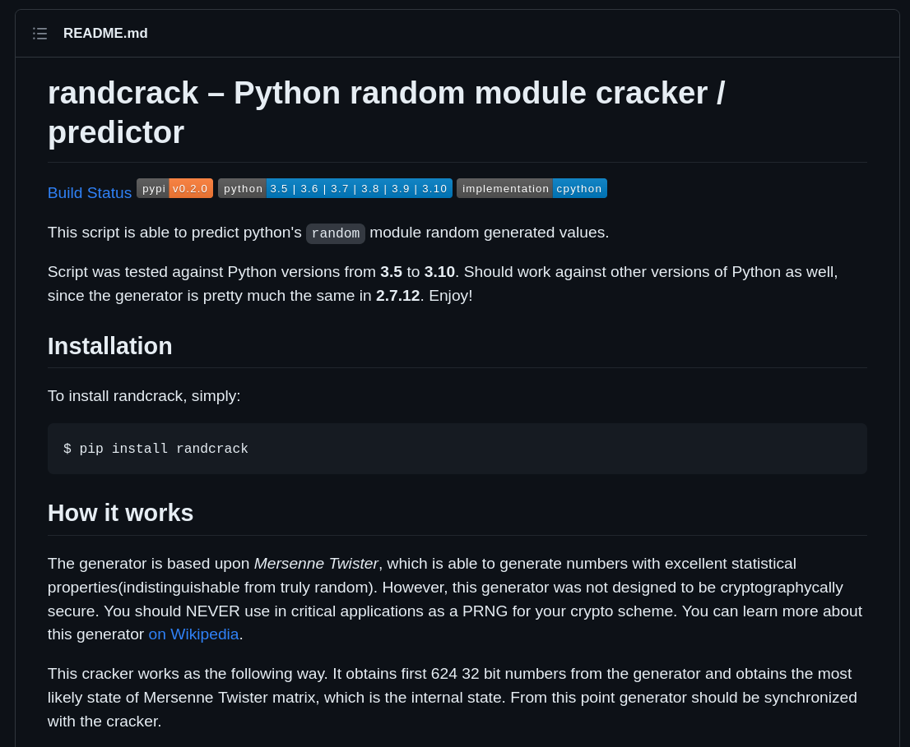
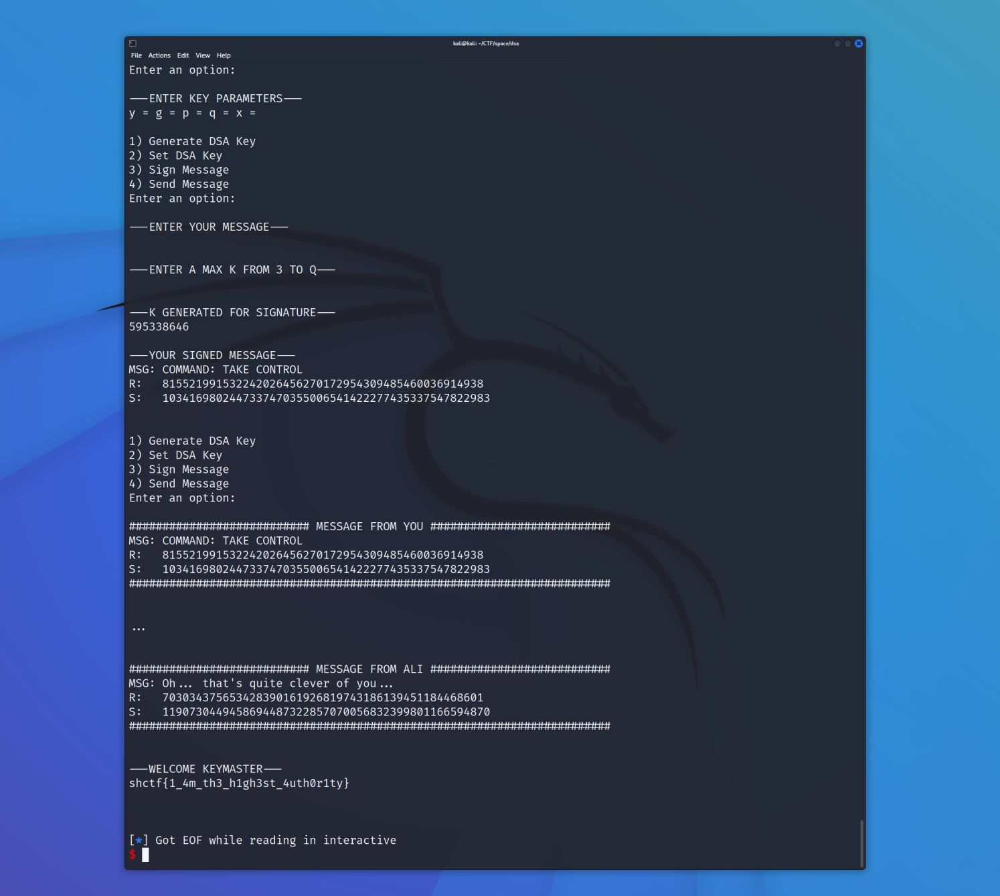

This challenge was my first experience with the DSA digital signature algorithm. We are provided with the following source code for the challenge.
To summarize, the code allows the user to generate DSA keys, set a custom DSA key, sign a message, and send a signed message. The goal is to crack the master key, and send the "command: take control" message.
#!/usr/bin/python3
import sys
import random, time
from Crypto.PublicKey import DSA
from Crypto.Hash import SHA256
from Crypto.Util.number import inverse
MASTER_KEY = DSA.generate(1024)
USER_KEY = None
CHALL = None
LAST_SIGNED_MSG = None
def get_opts():
opt = 0
while opt < 1 or opt > 4:
print("1) Generate DSA Key")
print("2) Set DSA Key")
print("3) Sign Message")
print("4) Send Message")
opt = int(input("Enter an option: "))
print("\n")
return opt
def gen_user_key():
global USER_KEY
USER_KEY = DSA.generate(1024)
print("---YOUR KEY PARAMETERS---")
print(f"y = {USER_KEY.y}")
print(f"g = {USER_KEY.g}")
print(f"p = {USER_KEY.p}")
print(f"q = {USER_KEY.q}")
print(f"x = {USER_KEY.x}\n\n")
def set_user_key():
global USER_KEY
print("---ENTER KEY PARAMETERS---")
y = int(input("y = "))
g = int(input("g = "))
p = int(input("p = "))
q = int(input("q = "))
x = int(input("x = "))
print("\n")
try:
USER_KEY = DSA.construct((y,g,p,q,x))
except:
print("---INVALID DSA KEY---\n\n")
def hash_msg(msg):
msg_bytes = bytes(msg, "ascii")
h = SHA256.new(msg_bytes).digest()
return int.from_bytes(h, "big")
def sign(msg, key, sender):
global LAST_SIGNED_MSG
h = hash_msg(msg)
k = 0
if sender == "YOU":
while k < 2 or k >= key.q:
try:
max = int(input("---ENTER A MAX K FROM 3 TO Q---\n"))
assert(max > 2 and max <= key.q)
print("\n")
k = random.randrange(0, max)
except:
k = 0
print("---MAX K MUST BE FROM 3 TO Q---\n")
else:
k = random.randrange(2, key.q)
print('secret k: ' + str(k))
kinv = inverse(k, key.q)
r = pow(key.g, k, key.p) % key.q
s = kinv * (h + r * key.x) % key.q
if sender == "YOU":
print("---K GENERATED FOR SIGNATURE---")
print(f"{k}\n")
print("---YOUR SIGNED MESSAGE---")
print(f"MSG: {msg}")
print(f"R: {r}")
print(f"S: {s}\n\n")
LAST_SIGNED_MSG = (msg,r,s)
return (r, s)
def verify(msg, r, s, key):
h = hash_msg(msg)
w = inverse(s, key.q)
u1 = (h * w) % key.q
u2 = (r * w) % key.q
u1 = pow(key.g, u1, key.p)
u2 = pow(key.y, u2, key.p)
v = (u1 * u2) % key.p % key.q
if r == v:
return True
else:
return False
def send_message(msg, r, s, key, sender):
global MASTER_KEY
print(f"########################### MESSAGE FROM {sender} ###########################")
print(f"MSG: {msg}")
print(f"R: {r}")
print(f"S: {s}")
print("########################################################################\n\n")
if sender == "YOU":
recv_message(msg, r, s)
def recv_message(msg, r, s):
global USER_KEY, MASTER_KEY
for i in range(3):
print("\r",end="")
print("."*(i+1),end="")
sys.stdout.flush()
time.sleep(.75)
print("\n\n")
if verify(msg, r, s, MASTER_KEY):
if msg == "COMMAND: TAKE CONTROL":
msg = "Oh... that's quite clever of you..."
r, s = sign(msg, MASTER_KEY, "ALI")
send_message(msg, r, s, MASTER_KEY, "ALI")
print("---WELCOME KEYMASTER---")
flag_file = open("flag.txt", "r")
flag = flag_file.read()
print(f"{flag}\n\n")
sys.exit()
else:
print("---INVALID COMMAND---\n\n")
elif verify(msg, r, s, USER_KEY):
if msg == "COMMAND: TAKE CONTROL":
msg = "HAH! Nice try, foolish human. x = " + str(MASTER_KEY.x)
r, s = sign(msg, MASTER_KEY, "ALI")
send_message(msg, r, s, MASTER_KEY, "ALI")
else:
msg = "I find your conversation boring and disinteresting, simple human."
r, s = sign(msg, MASTER_KEY, "ALI")
send_message(msg, r, s, MASTER_KEY, "ALI")
return
msg = "Human, I cannot even verify that message was from you."
r, s = sign(msg, MASTER_KEY, "ALI")
send_message(msg, r, s, MASTER_KEY, "ALI")
# ASCII art from https://www.asciiart.eu/space/aliens
print(" _____")
print(" ,-\" \"-.")
print(" / o o \\")
print(" / \ / \\")
print(" / )-\"-( \\")
print(" / ( 6 6 ) \\")
print(" / \ \" / \\")
print(" / )=( \\")
print(" / o .--\"-\"--. o \\")
print(" / I / - - \ I \\")
print(" .--( (_}y/\ /\y{_) )--.")
print("( \".___l\/__\_____/__\/l___,\" )")
print(" \ /")
print(" \"-._ o O o O o O o _,-\"")
print(" `--Y--.___________.--Y--'")
print(" |==.___________.==|")
print(" `==.___________.=='\n")
print("Greetings Earthling, let us engage in telecommunication between our ships.")
print("To ensure validity, here are my parameters for verification with DSA.\n")
print(f"y = {MASTER_KEY.y}")
print(f"g = {MASTER_KEY.g}")
print(f"p = {MASTER_KEY.p}")
print(f"q = {MASTER_KEY.q}\n")
print("I have built a system for us to communicate over. Do not fret your little mind over it, it is quite simple\nto use, it even allows you to generate your own K.")
print("I ask that you do not send any commands to my ship, it is not like it would believe YOU were its owner.\n\n")
for request in range(700):
match get_opts():
case 1:
gen_user_key()
case 2:
set_user_key()
case 3:
msg = input("---ENTER YOUR MESSAGE---\n")
print("\n")
sign(msg, USER_KEY, "YOU")
case 4:
if type(USER_KEY) != DSA.DsaKey:
print("---ERROR: KEY IS NOT SET---\n\n")
elif LAST_SIGNED_MSG == None:
print("---ERROR: NO MESSAGES HAVE BEEN SIGNED---\n\n")
else:
send_message(LAST_SIGNED_MSG[0], LAST_SIGNED_MSG[1], LAST_SIGNED_MSG[2], USER_KEY, "YOU")
msg = "You have thoroughly bored me human, see you never."
r,s = sign_message(msg, MASTER_KEY, "ALI")
send_message(msg, r, s, MASTER_KEY, "ALI")
Looking at this code, the vulnerability is not immediately obvious. But after playing with the script for a while, I found it interesting that we get to pick the upper range of the randrange call in the sign method. With up to seven hundred tries, this seems like a lot of information on the state of the PRNG.
And this is the same PRNG being used to generate the random secret k values for the DSA algorithm. From the DSA Wiki Page, we know that "With DSA, the entropy, secrecy, and uniqueness of the random signature value k are critical. It is so critical that violating any one of those three requirements can reveal the entire private key to an attacker."
With a little research I stumbled on the RandCrack project. RandCrack only requires 624 32-bit integers generated by randrange in order to break the Mersenne Twister PRNG (which is what randrange is based on).
Nice! So with 624 runs through the sign function we can break the randomness and recover the value of k which will be used to sign a message with the master key. But how can we crack the master key by just knowing k with a signed message?
$$ \begin{aligned} s &\equiv k^{-1}(H(m) + xr) &\pmod q \\ k^{-1} xr &\equiv s - k^{-1} H(m) &\pmod q \\ x &\equiv r^{-1} ks - r^{-1} H(m) &\pmod q \end{aligned} $$
Great! So by knowing m, r, s, and k, we can break the master key! My solve script is below.
from randcrack import RandCrack
from Crypto.Hash import SHA256
from Crypto.Util.number import inverse
from pwn import *
def hash_msg(msg):
msg_bytes = bytes(msg, "ascii")
h = SHA256.new(msg_bytes).digest()
return int.from_bytes(h, "big")
conn = remote("spaceheroes-dsalien.chals.io", 443, ssl=True, sni="spaceheroes-dsalien.chals.io")
# conn = process(['/usr/bin/python3', './DSAlien.py'])
conn.recvuntil(b'y = ')
# recieve the master key
master_y = int(conn.recvline().decode().strip())
master_g = int(conn.recvline()[4:].decode().strip())
master_p = int(conn.recvline()[4:].decode().strip())
master_q = int(conn.recvline()[4:].decode().strip())
log.info(f'y = {master_y}')
log.info(f'g = {master_g}')
log.info(f'p = {master_p}')
log.info(f'q = {master_q}')
# generate our key
conn.sendline(b'1')
conn.recvuntil(b'y = ')
# recieve our key
our_y = int(conn.recvline().decode().strip())
our_g = int(conn.recvline()[4:].decode().strip())
our_p = int(conn.recvline()[4:].decode().strip())
our_q = int(conn.recvline()[4:].decode().strip())
our_x = int(conn.recvline()[4:].decode().strip())
# rng cracker
rc = RandCrack()
for i in range(624):
conn.sendline(b'3')
conn.sendline(b'MESSAGE: HELLO')
conn.sendline(b'4294967295') # 32-bit int
conn.recvuntil(b'---K GENERATED FOR SIGNATURE---\n')
rc.submit(int(conn.recvline()))
log.info(f'[{i+1}/624]')
# send the message
conn.sendline(b'4')
k = rc.predict_randrange(0, master_q) + 2
log.info(f'k (PREDICTED): {k}')
# their signature
conn.recvuntil(b"MSG: I find your conversation boring and disinteresting, simple human.\n")
master_r = int(conn.recvline()[4:])
master_s = int(conn.recvline()[4:])
log.info(f'(r, s) = ({master_r}, {master_s})')
msg = "I find your conversation boring and disinteresting, simple human."
h = hash_msg(msg)
r_inv = inverse(master_r, master_q)
# break the secret key!!
master_x = (r_inv * (k * master_s - h)) % master_q
log.info(f'Secret Key: {master_x}')
# set our fake key
conn.sendline(b'2')
conn.sendline(str(master_y))
conn.sendline(str(master_g))
conn.sendline(str(master_p))
conn.sendline(str(master_q))
conn.sendline(str(master_x))
# sign / send the take control command
conn.sendline(b'3')
conn.sendline(b"COMMAND: TAKE CONTROL")
conn.sendline(b'4294967295')
conn.sendline(b'4')
conn.interactive()
Running this script against the challenge server fetches the flag! Thanks to the challenge authors for a great CTF!
